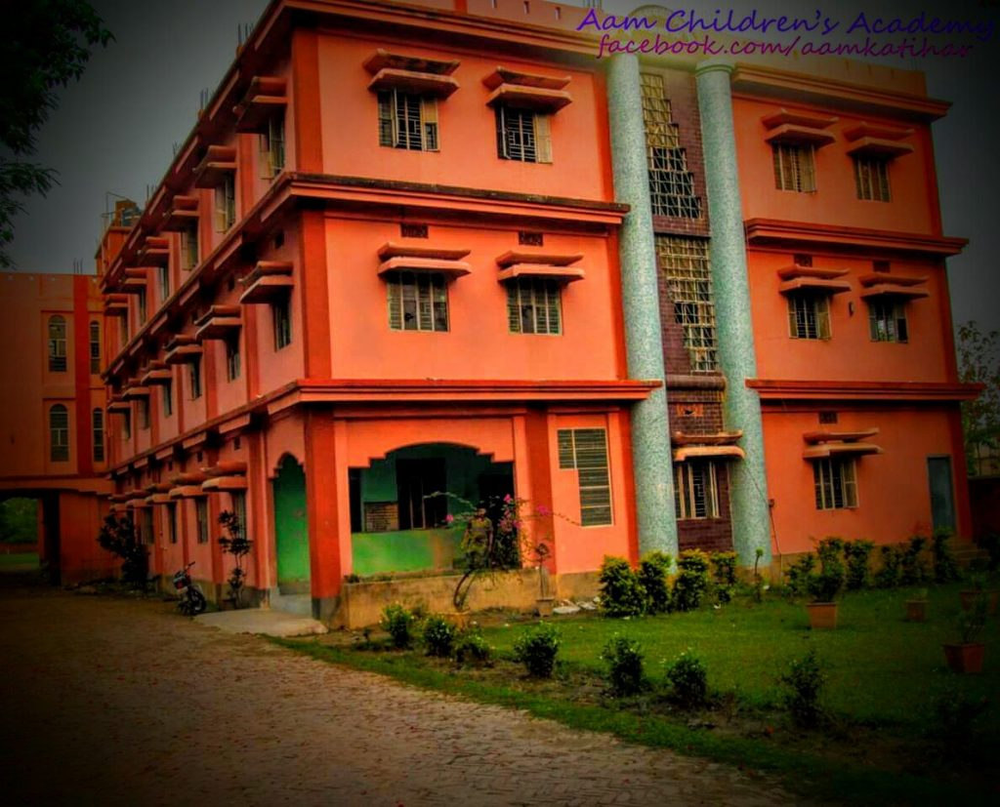

Adhin Ajablal Manjhi children's academy,Katihar
Established 1967 , Affiliated to CBSE

Established 1967 , Affiliated to CBSE
It is a great honour and privilege to be a part of A.A.M children's academy as a principal because this is the school where excellency gets its synonym. I am commited not only to maintain the impeccable image established but also to carry it forward to now heights. It is an era evolving with holistic education all around. constant innovation & improvement occured in this connection but still we have to do a lot.
The agitation of current generation indicates its anxiety & frustration regarding stressful present & uncertain future.In such a scenario, the school based education system requires a modified defination to balance today's need. Education for me doesn't mean to produce an answeringbox or a cramming parrot but it meant to equip the pupils with the means to find the answering for themselves within themselves. In fact within each student, there is a future Doctor, Engineer, Teacher, Activist, Sports Person, Poet, Writer or thinker.It is a silent team of workers and dedicted faculty who support them to visualize and channelize the resources. Luckily, I have that team and also a favourable managing committee. The entire members of the committee work hard to provide world class education. The teachers are qualified in their descipline and dedicated for all round development of the pupils, as a result of which pupils become mentally, spiritually and ethically strong enough to meet any challenge of life.
As a principal of an esteemed school, my sole aim is not only to be a good administrator but also be open to the students. I assure that my door will always be open to the students and their parents for any suggestion or guidance.
I would like to sum up my message with these golden words of Robert Frost, a name that needs no identification.
A.A.M.C.A. Co-educational(10+2) English medium school located at Fasiya tola, Katihar under A.A.M.C.A. educational society was firstly up as a primary school at Gami tola, Katihar in 1967. It is the first English Medium school of this locality which played pivotal role to establish its real values & innovation ideas within educational boundaries.
After successful trac record of running the same and in corpating some more members in the Managing committee a second campus at Fasiya Tola, katihar by acquiring 2.5 acres of land was developed, keeping in view the norms of C.B.S.E. and was affilated to it (Affilation No. -330108) in 2004.
The school imparts quality education with modern faculties up to +2(Science & Commerce) level. It has been designed to have spacious and airy classrooms supported by smart class, well equipped laboratories for Physics Chemistry, Biology, Mathematics, computer science, Physical education, rich library, playground, & sufficient facilities for outdoor & indoor games.
The students are encouraged to take part in Yoga, MarshalArt, FineArt and Cultural activities, Music, community services and Dance & Drama. It also celebrates all important National Festivals and occations in school as per calender.
The school aims in growing the country better citizens for tomorrow with high moral values, Competence and Compassion.
A.A.M Children's Academy Katihar, is a Senior Secondary School (XI-XII), affiliated to  Central Board of SecondaryEducation (CBSE). The School is a CoedDay School, with classes from Nursery to XII. It is an English,Hindi Medium school. The school islocated in Katihar. A.A.M Children's Academy was established in 1967. It is a Private School and is managed by Adhiri Ajab Lal ManjChild Educatinal Trust.AAM Children's Academy services the educationalneed of hundreds of students from Nurserythrough XII. The classes in AAM Children's Academy for every academi year starts from April-March.Adhin Ajablal Manjhi Children's Academy also known as AAM Children's Academy is named after 'Adhin Ajab Lal Manjhi'.A.A.M Children's Academy, Katihar is one of the best Central Board of Secondary Education (CBSE) schools in Katihar and ranks among the top schools in Katihar.Here, the dedicated and professional teachers ensure that the children get the maximum out of their education in this Central Board of Secondary Education (CBSE) school in Katihar. The school has given exceptional results in the academic sphere and its students have excelled in extra co-curricular activities too.
A.A.M. Children's academy was started as a primary school at Gami Tola, Katihar in 1967 from the donation of 0.010.00 Are of land and Rs. Ten Thousand in cash from late Adhin Lal Manghi and Late Ajab Lal Manghi with an aim to provide education to the children in English medium.A government body of the following founder members was formed to run the same.
In due course of time A.A.M. Children's Educational society was formed, registered and the school was bought under it.Later on it was decided to establish a higher secondary school as per the norms of CBSE.Accordingly a second campos was developed by acquiring 1.00.31 Are (2.5 acres) of land at Fasia Tola, Katihar.The school was equipped with an infrastructure of national repute.
The school has been granted provisional affiliations for secondary stage in 2004 and for Sr. secondary stage in science and commerce faculties in 2011 by CBSE,Delhi.
The school has expectation from parent's locality.Without co-operation of the parents, good education cannot be achieved by a child.Each child deserves emotional & mental support from his/her parent.So, it is well said that a family is the first school of a child.No doubt, parents bear a great responsiblity to pay attention to their kids.Keeping in view the significant image of their versatility, they are expected to maintain the following suggestions in favour of the healthy environment of the school.
The Academic session of A.A.M. Children's academyis scheduled from the month of April to March as per norms of CBSE Delhi.
Admissions are taken for Std.-1 to Std.-11 as per the allotted number of seats in each class. Under followinf terma & conditions.
Admission under RTE is being entertained as per the guidelines of state Government. Candidates from SC, ST, BC, OBC & Minority class whose family income is not more than Rs. 1 Lakh per annum & candidates from general group whose family income is less than Rs. 2 Lakh per annum will be entitled to have admission for the reserved seats.
If a guardian wants to withdraw his/her ward from the school he/she may apply in a plane paper for the same stating the reason of withdrawl. A free equivalent to the monthly tution fee will be charged after issuing clean cheat for no dues up to the month of releasing T. C. A student may be removed from the school either in the case of failure of annual examination in a particular class for successive two years of adopting serious misconduct in the school premises.
The school provides conveyance facility on payment of requisite fees for desirous students at scheduled stoppages. Students once enrolled for conveyance services can not be allowed to discontinue the same during the running sessionn.
Under the CCE (Continuous and comprehensive evaluation) system the examination are held as per published Annual calender. Guardians are expected to be conscious enough about the programme, evaluation & result regarding all relavant examinations to ensure the progress of their wards. Parents/Guardians may consult the school authority or concerning subject teacher to acknowledge the said activity from time to time but in no case private tutors will be entertained for the same. It is mandotary to deposit all overdue/fee before the commencement of both half yearly & annual examinations. Two examinations will be held in the name of summative assessments apart from two formative assessments for each summative test which includes class test M.C.Q. test, surprise test, home work, class work and other academic activities.